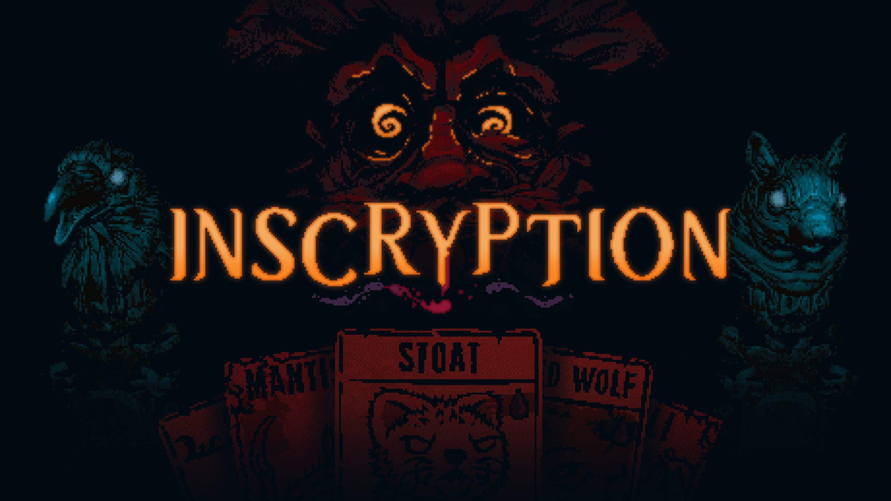

For more information on the structing of the review click here.
Introduction
Inscryption is a title that I have been interested in playing since I saw that the user reviews were so high. For those who are unaware, Steam has an interesting rating system. A rating is then given to a game based on the percentage of positive reviews over the total amount of user reviews. Inscryption had a score of "Overwhelming Positive." For a game to achieve that score, it has to have a minimum of 95% positive reviews. Rarely do I see a game reach that 95% mark, especially popular titles with over 10,000 reviews like Inscryption.
Inscryption was developed by Daniel Mullins, an indie developer who has also developed "The Hex" and "Pony Island". "The Hex" was also a well-received title with an overall positive percentage at 94% and "Pony Island" achieving a positive review percentage of 95%. "Pony Island" had over 9,000 reviews, whereas "The Hex" had over 1,000 reviews. Daniel's track record indicates he knows what he's doing, and his games are always good.
My initial impression of Inscryption came while I was perusing the Steam discovery feature. While I think recommendation applications do not usually do a good job, Steam's can find some hidden gems from time to time. I wishlisted the game and waited for it to go on sale. The one thing holding me back from purchasing it immediately was my lack of money (graduate school doesn't pay well) and the fact it was a card game. Card games can be fun and addictive or horrible pay-to-win games that reward players with money (which, again, I do not have). Inscryption is not pay-to-win, but in my opinion, it can still be a bit risky to purchase a card game; I am still in school, so getting addicted to a video game would be problematic. However, the user reviews swayed me into waiting for winter break to purchase and play the game.
Sound
To start, the game sounds incredible. The game has several different contrasting tones it would like to express and the sounds that accompany the game do a great job of doing so. Gameplay actions feel immensely satisfying. Each action you make in the card game gives the user great feedback and makes the game slightly more addicting and exciting. The sounds while communicating with characters emminates the tone of the scene properly and breaths life into chacters without voice acting. Speaking to companion characters feels completely different, when talking to a card it portrays the feeling that they are not nearly as powerful as the character that talked to you before.
I don't have too much more to add to the sound. The sound is great and adds atmosphere to the game in a great way.
Visuals
The visuals are are good but there are some that leave something left to be desired. Daniel and his team did a fantastic job mixing several art styles which all give off diferent vibes. However, at some points of the game it the visuals do not feel nearly as impactful as they once were. I can't go into specifics until we discuss the story, you'll just have to trust me when I say the visuals are mostly good except for one section of the game.
Story/Narrative
From this point forward there will be spoilers, reader beware. When you start the game you are greeted by a pair of floating eyes who explains your current situation. Immediately you feel put off. The music and sounds do wonders here emphasising that you are alone and you know nothing. Once you begin the tutorial, a particular card starts to speak to you. The card explains that you are trapped and need to find a way to escape.
After the warm introduction, you begin playing against the ominous pair of eyes in front of you. Each match feels a little harder than the last. As you begin to win matches and progress, you fight bosses, learn new mechanics and gain new cards. However, you should lose; I understand it is probably possible to win on your first run, but that seems extremely unlikely for most players. Losing introduces new story elements to the player and explains how the cards speak. This may sound like a mechanic, but this becomes a vital storytelling device as you realize the cards you were talking to were trapped by the magical camera the crazy old man uses. The camera is what creates the cards. You can create a new card that combines existing cards in your deck every time you lose. Each card you create will then become playable in future decks.
To escape, you pretty much need to experiment with everything the card game offers you. There is a mechanic, which I will discuss in more detail later, where you can use an item. When you use one of the items, it will rip out your eye and allow you to finish one of the puzzles. Puzzles are optional. You could play cards with the diety in front of you for an eternity if you wanted to. However, the cards that speak will constantly remind you to get moving.
I won't cover the puzzles, but they were fun to figure out and progress. Progression is beating three bosses. The first is the prospector; his gimmick turns your cards to gold halfway into the fight. The second is the angler who will try to take your cards away from you. Finally, there is the trapper, where whenever one of your cards dies, you get a pelt which you can then trade with the boss during the second half of the fight. Each boss offers different challenges and are generally fun. The final boss is the crazy old man himself. Beating him will restart the whole game again. Unless you solved all of the puzzles, in which case, you could take a picture of HIM to escape. Once you take a picture of the crazy old man, the game fades to darkness, and to your right, you see a new game+ icon. After selecting that, the room turns to pitch black, and you have to quit the game and select new game+ in the main menu.
Once you enter new game+ you are greeted with found footage from what seems to be a Youtube card channel discussing the card game Inscryption. He is opening packages from viewers when one of his packages takes him to a remote location in the woods, where he finds a floppy disk. The floppy disk turns out to be a virtual version of the Inscryption playing card game. The player is then dropped into a two-dimensional game to defeat four bosses on four islands. The four bosses, which we will call scrybes, are, Grimora, Scrybe of The Dead; Leshy, Scrybe of Beasts; P03, Scrybe of Technology; or Magnificus, Scrybe of Magicks. You learn that Leshy was the crazy old man and that the talking cards were the other three scrybes! After you defeat all four scrybes you can select one scrybe to replace. However, during this process, P03 attempts to take over the game.
You are then shown more found footage; in this footage, the man who found the game attempts to get the developer's answers about the software. You also learn that a developer Kaycee Hobbes died while making the game. Kaycee is a card that the player can use during Leshy's game, implying you are not the first person to play this game. After the footage, the player plays in a factory controlled by P03. The player must complete puzzles again to stop P03 from reaching "transcendence." P03 plans to infect multiple computers using the internet and spread worldwide. With the help of the other three scrybes you beat him in a match, and the three scrybes kill P03.
Once you best P03, the game begins to unravel. You play one last game with each scrybe as the game deletes itself. Once all of the files are deleted, the game is complete.
Gameplay
The gameplay is dense, and Inscryption does a great job at using its gameplay to compel the story. The first section of the game is fantastic. As mentioned earlier, you are playing against Leshy. Leshy's cards are captured and created with his magical camera. The camera creates a card with a health number, attack number, and summoning cost. The summing cost can range from sacrifices to how many cards have died prior. Leshy's card game feels fun to play and is fast-paced.
After you clear Leshy, you are dropped into the second half of the game, where all of the scrybes' rules are now in play. This dramatic shift in gameplay is jarring. P03 and Magnificus's rules add too much in such a short time that learning how to utilize these new cards properly feels frustrating. Maybe this only applies to me because I picked P03's deck, and the pace is much slower than Leshy's. P03's rules involve this charge bar and his cards are only able to be placed once you have enough energy to place them. With Leshy's rules, you can place a boss monster on turn one. P03's rules do not allow for that and it slows the game down. With P03's deck you are reliant on draws, if you do not have enough energy and none of your cards have enough energy to be played then you are stuck. I did not feel this way when working within Leshy's rules.
Speaking of P03, once you clear through the second section of the game, you have to play through P03's game. So all of the criticism I had in the last paragraph is now in full force. In the previous part of the game, you can use Leshy's cards if you want to. Now you have to play P03's game, and it's slow. I put the game down for a few days when I realized it. After taking a break, I returned and attempted to learn this new play style. It ended up being fun once you get used to it, but a fair warning to new players the gameplay change up may throw off some who just wanted to play Leshy's game. If you want to play Leshy's game, you can use Kaycee's mod to do so.
Fun Factor
The game is fun. There is no debate about that. Even when learning new rules and styles, it is still fun. I beat the game in a week (which includes the break). I wouldn't have completed it if the fun was lacking. If you have enjoyed card games before, this one is an excellent addition to the genre.
Rating
I give the game a 8/10. It is a fantastic experience that most people will love and is evident in the Steam reviews. The gameplay change up halfway through the game may impact some player's enjoyment but the story reasons for the change up will keep players playing like it did for me.
| Score | Implication |
|---|---|
| 0 | Terrible game, do not even play if its free. |
| 1 | Terrible game, may be a funny gag gift. |
| 2 | Bad game, has too many problems for most users to consider purchasing. |
| 3 | Bad game, is a finished product and is playable but sucks. |
| 4 | Below average game, not my cup of tea but some may enjoy the experience. |
| 5 | Average game, you've probably seen this game before and know if youd like it or not. |
| 6 | Slightly above average game, a decent game with some fun experiences if you like what you read you may enjoy it. |
| 7 | Good game, most people will have some fun with it and may be worth picking up. |
| 8 | Great game, the experience was fun and the game is worth a purchase. |
| 9 | Almost a perfect game, not only is it fun but it may be your new favorite. |
| 10 | Perfect game, if you haven't played it you are missing out and should feel bad about it. |